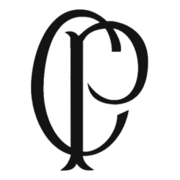
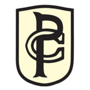
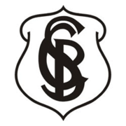
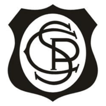
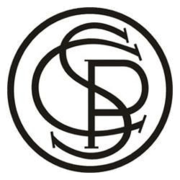
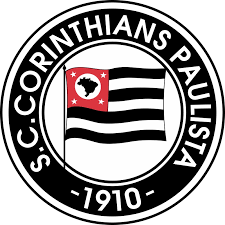
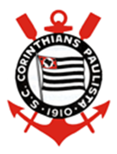
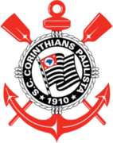

O Sport Club Corinthians Paulista, comumente referido como Corinthians, ou ainda pelo seu acrônimo SCCP, é um clube poliesportivo brasileiro da cidade de São Paulo, capital do estado de São Paulo. Foi fundado como uma equipe de futebol no dia 1 de setembro de 1910 por um grupo de operários do bairro Bom Retiro. Seu nome foi inspirado no Corinthian Football Club de Londres, que excursionava pelo Brasil.
Embora tenha atuado em outras modalidades esportivas ao longo dos anos, seu reconhecimento e suas principais conquistas foram alcançados no futebol. O clube é um dos mais bem sucedidos do Brasil e das Américas nos últimos anos. É o terceiro maior campeão nacional, com onze conquistas, ficando atrás somente do Palmeiras (17 conquistas) e Flamengo (14 conquistas). Conquistou dois Mundiais de Clubes da FIFA, uma Copa Libertadores da América de forma invicta, uma Recopa Sul-Americana, sete Campeonatos Brasileiros, três Copas do Brasil, uma Supercopa do Brasil, cinco Torneios Rio-São Paulo (recordista, ao lado de Palmeiras e Santos), 30 Campeonatos Paulistas (atual recordista) e uma Copa Bandeirantes (único vencedor).
Suas cores tradicionais são o branco e o preto. Desde 2014, manda suas partidas de futebol na Neo Química Arena. Seus rivais históricos são o Palmeiras, com quem disputa o Derby Paulista; o São Paulo, com quem disputa o Majestoso; e o Santos, com quem disputa o Clássico Alvinegro. Sua torcida é conhecida como "Fiel" e seus torcedores são estimados em aproximadamente 30 milhões espalhados por todo o Brasil e pelo mundo, atrás nacionalmente somente do carioca Flamengo. A a sua torcida é considerada também uma das maiores torcidas do mundo.
História
Fundação (1910-1912)
Em 1 de setembro de 1910, um grupo de cinco operários (Joaquim Ambrósio, Antônio Pereira, Rafael Perrone, Anselmo Correa e Carlos Silva) do bairro paulistano Bom Retiro, sob a luz de um lampião, às oito e meia da noite, decidiram criar um novo time de futebol, além de mais oito pessoas que contribuíram com 20 mil réis e também foram considerados sócios-fundadores. A ideia surgiu depois de assistirem à atuação do Corinthian FC, equipe inglesa de futebol fundada em 1882, que excursionava pelo Brasil. Os ingleses eram chamados pela imprensa da época de "Corinthian's Team", mas o time brasileiro só seria batizado "Sport Club Corinthians Paulista" depois de muita discussão e algumas reuniões. O presidente escolhido por eles foi o alfaiate Miguel Battaglia, que já no primeiro momento afirmou, "O Corinthians vai ser o time do povo e o povo é quem vai fazer o time". Da primeira arrecadação de recursos à compra da primeira bola de futebol do clube pouco tempo se passou, na verdade, apenas uma semana. Um terreno alugado na Rua José Paulino foi aplainado e virou campo, e foi lá que, já no dia 14 de setembro, o primeiro treino foi realizado diante de uma plateia entusiasmada que garantiu: "Este veio para ficar". De partida em partida o time foi se tornando famoso, mas era ainda um time de várzea.
Primeiros títulos (1913-1919)
Em 1913, uma dissidência entre três clubes que disputavam o Campeonato Paulista abriu a oportunidade para que clubes de origem popular, conhecidos à época como "varzeanos", disputassem a competição organizada pela LPF, e o Corinthians ganhou o direito de disputar pela primeira vez essa competição após vencer uma seletiva contra o Minas Gerais, representante do bairro do Brás, e o FC São Paulo, do bairro do Bixiga.
A estreia corintiana no Campeonato Paulista foi contra o Germânia, no dia 20 de abril de 1913, em duelo que terminou com vitória adversária, pelo placar de 3–1. Nos quatro jogos seguintes, foram três derrotas (para Internacional, Americano e Santos) e um empate (Ypiranga). A primeira vitória ocorreu no dia 7 de setembro, um 2–0 contra o Germânia. Nas três partidas seguintes, mais três empates (com Internacional, Ypiranga e Americano). Ao final do Paulista de 1913, o Corinthians terminou na quarta colocação, com seis pontos ganhos (uma vitória, quatro empates e três derrotas, oito gols a favor e 16 contra). De positivo, o time revelaria dois futuros ídolos: Neco e Amílcar.

A temporada seguinte seria marcante para a história corintiana. Com apenas quatro anos de existência, o time conquistou seu primeiro título, o Campeonato Paulista de 1914 (organizado pela LPF). O Corinthians sagrou-se campeão de forma invicta, com 10 vitórias em 10 partidas, 37 gols marcados e 9 gols sofridos. Com 12 gols, Neco foi o artilheiro da competição. A equipe que conquistou o primeiro título da história corintiana era formada por: Aristides, Fúlvio e Casemiro González; Police, Bianco e César Nunes; Américo, Peres, Amílcar, Apparício e Neco. Ainda naquele ano, o Corinthians realizou sua primeira partida contra uma equipe estrangeira, o Torino. Os italianos venceram por 3–0.
Cores e Símbolos
Uniforme
Oficialmente, a primeira camisa do Corinthians teria a cor bege, em homenagem ao time inglês homônimo. A camisa de 1910 tinha detalhes em preto nas mangas, barra e gola. Os calções eram brancos e feitos com sacos de farinha. Entretanto, para o jornalista Celso Unzelte, pesquisador da história do time, seria muito improvável que o clube, na época pobre e humilde, tivesse recursos financeiros para comprar uniformes que não fossem brancos, e mesmo a fotografia mais antiga do time, do Campeonato Paulista de 1913, mostra os jogadores vestindo camisas e calções brancos.
Incontroverso é o fato de que, a partir de 1920, o Corinthians passou a jogar com camisa branca e calção preto, quando a diretoria conseguiu dinheiro para comprá-los. Desde então, tornaram-se o uniforme oficial. A partir deste modelo, encontra-se registro das primeiras versões alternativas do uniforme, utilizadas em partidas específicas. Somente em 22 de dezembro de 1946 os atletas do clube entrariam em campo com camisas numeradas, em um amistoso contra o Club Atlético River Plate, no Estádio do Pacaembu. Em 1949, o clube usou uma camisa grená em um amistoso contra a Portuguesa de Desportos, como uma forma de prestar homenagem ao elenco do Torino Football Club da Itália, que foi vitimado em um acidente de avião contra a Basílica de Superga, em Turim.
No final de agosto de 2010, o Corinthians lançou no Parque São Jorge a camisa em comemoração ao centenário do clube, que foi utilizada como uniforme titular nas partidas em casa até o final do Campeonato Brasileiro daquele ano. A camisa remete ao suposto primeiro uniforme utilizado pelo Corinthians em 1910, com as camisetas na cor bege e no escudo as letras "CP", fazendo referência ao primeiro símbolo utilizado pelo clube.
Evolução dos uniformes
Escudo
Ao contrário da camisa, o escudo do Corinthians passou por várias alterações ao longo dos anos. Enquanto o time disputava apenas amistosos e torneios de futebol de várzea, a camisa não tinha distintivo. O primeiro foi criado às pressas para o jogo contra o Minas Gerais, válido pela eliminatória para a Liga Paulista de Foot-Ball de 1913, e levava apenas as letras "C" e "P" (de Corinthians e Paulista) enlaçadas. Esse escudo seria usado até o ano seguinte, quando Hermógenes Barbuy, litógrafo e irmão do jogador Amílcar, criou o primeiro escudo oficial, elaborando uma moldura para as letras e acrescentando o "S" (de Sport), que estreou no amistoso contra o Torino (Itália), em São Paulo
Pouco tempo depois a moldura fica maior, e a partir de 1919 o distintivo começa a ganhar o formato atual, com a bandeira do Estado de São Paulo ao centro. Em 1937, o presidente Getúlio Vargas baixou o Estado Novo e fez uma cerimônia pública com a queima das bandeiras de todos os Estados da federação, pois queria um governo forte e centralizado. A bandeira paulista só sobreviveu dentro do escudo do Corinthians. Após a queda do regime, o uso de símbolos regionais foi liberado. Em 1939, o escudo ganhou uma boia rodeando o círculo, além de um par de remos e a âncora, em alusão ao sucesso do clube nos esportes náuticos. O desenho foi criado pelo pintor modernista Francisco Rebolo, que foi jogador do segundo quadro do Corinthians na década de 1920. Depois disso, o símbolo corintiano passou por pequenas alterações ao longo do tempo, como na bandeira e na moldura
Pensando na modernização do distintivo, em 1980, o artista Orfeu Maia criou uma nova versão de nosso brasão que perdura até os dias atuais, substituindo a boia por uma corda e criando um design gráfico fantástico.
Em 1990, foi adicionada a primeira estrela em referência ao primeiro título brasileiro. O mesmo foi feito com as conquistas de 1998, 1999 e 2005, além de uma estrela maior com contorno prateado posta acima das demais, em homenagem à conquista do Mundial da FIFA de 2000. Em 2011 a diretoria do Corinthians resolveu deixar de lado todas as estrelas do distintivo do clube, relevando a importância do seu próprio símbolo.[154] Abaixo, a evolução dos escudos, desde a fundação até os dias atuais:
| Evolução do Escudo do Sport Club Corinthians Paulista | 1913 | 1914 | 1915 | 1915 | 1916-1919 | 1919-1939 | 1939-1979 | 1980-Presente |  |  |  |  |  |  |  |  |
|---|
Futebol Feminino
A equipe, iniciada em 1997 e desativada por alguns anos, foi restabelecida em 2016 numa parceria com o Audax. Reassumiu gestão própria a partir de 2018, tendo sido, desde então, uma das principais forças do futebol feminino nacional. Conquistou 4 vezes a Copa Libertadores da América, 5 vezes o Campeonato Brasileiro Feminino, 1 vez a Copa do Brasil e 4 vezes o Campeonato Paulista.
| HONRARIAS | ||
|---|---|---|
| Competição | Titulos | Temporadas |
| Triplice coroa | 1 | 2021 |
| 7º Lugar - Ranking Mundial de Clubes IFFHS | 1 | Condecoração outorgada em 2022 pela IFFHS de março de 2021 a fevereiro de 2022 |
| CONTINENTAIS | ||
|---|---|---|
| Competição | Titulos | Temporadas |
| Copa Libertadores da América | 4 | 2017, 2019, 2021 e 2023 |
| NACIONAIS | ||
|---|---|---|
| Competição | Titulos | Temporadas |
| Campeonato Brasileiro | 5 | 2018, 2020, 2021, 2022 e 2023 |
| Supercopa do Brasil | 3 | 2022, 2023, 2024 |
| Copa do Brasil | 1 | 2016 |
| ESTADUAIS | ||
|---|---|---|
| Competição | Titulos | Temporadas |
| Campeonato Paulista | 4 | 22019, 2020, 2021 e 2023 |
| Copa Paulista | 1 | 2022 |
| TOTAL | ||
|---|---|---|
| Competição | Titulos | Temporadas |
| Titulos Oficiais | 18 | 4 Continentais, 9 Nacionais e 5 Estaduais |